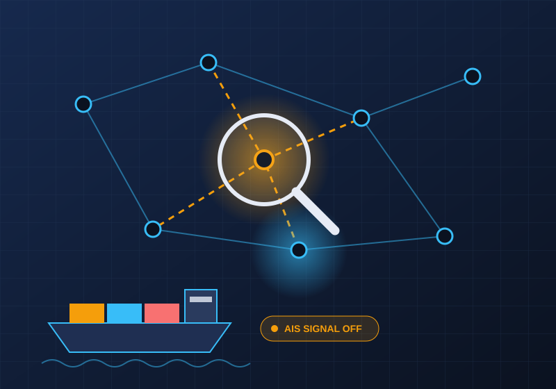

Foundations
Sanctions 101
What UN sanctions are, who adopts them, and why enforcement depends on member states.
Read more →An educational guide to the methods used to bypass United Nations Security Council sanctions, and to the Panels of Experts that investigate, document and report on violations.
Explore evasion methods Meet the Panels
Three starting points for understanding why sanctions are hard to enforce and who tracks the violations.
What UN sanctions are, who adopts them, and why enforcement depends on member states.
Read more →
Maritime tricks, shell companies, falsified paperwork and other documented patterns.
Read more →
How small teams of specialists investigate violations and report to the Security Council.
Read more →Sanctioned actors rarely act in their own name. Public reports describe a recurring pattern: hide who is behind a deal, hide where goods came from, and hide where money ends up.

The UN has no enforcement agency of its own. Panels supply the independent evidence that gives sanctions teeth.